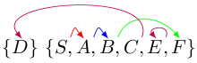
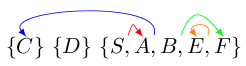
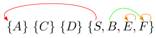

Wenn ein Endlicher Automat gegeben ist, kann durch die Konstruktion von Äquivalenzklassen sehr einfach ein Automat mit gleichem Akzeptanzverhalten und minimaler Anzahl an Zuständen gefunden werden. Dafür benötigt man im Wesentlichen sogar nur drei Schritte.
Contents
Der Algorithmus
- Überflüssige Zustände streichen: Manche Zustände sind nicht erreichbar. Diese können offensichtlich gestrichen werden.
- Akzeptierende von nichtakzeptierenden Zuständen trennen: Alle akzeptierenden Zustände werden in eine Äquivalenzklasse gepackt, alle Zustände die nicht akzeptieren kommen in eine andere Klasse.
- Zustände trennen: Für jedes Zeichen des Eingabealphabets `$\Sigma$` schreibt man sich auf, in welchen Zustand der Zustand führt. Wenn zwei Zustände in verschiedene Klassen führen, werden diese getrennt. Dies wiederholt man so lange, bis man ein mal alle Zeichen aus `$\Sigma$` durchgegangen ist, ohne dass Zustände getrennt wurden.
Beispiel
Gegeben sei folgender Endlicher Automat A: $A = (\{0,1\}, \{S, A, B, C, D, E, F, G, H, I\}, S, \sigma, \{D\})$ mit folgender Übergangsfunktion $\sigma$:
{kind=link}
Endlicher Automat mit überflüssigen Zuständen
Es ist offensichtlich, dass I nicht erreicht werden kann. Da der Graph gerichtet ist, kann man schnell sehen, dass auch H und G nicht erreicht werden können. Algorithmisch kann man diese Zustände durch eine Tiefensuche bestimmen.
Nach Schritt 1 haben wir also den Automaten $A_1 = (\{0,1\}, \{S, A, B, C, D, E, F\}, S, \sigma, \{D\})$:
{kind=link}
Keine überflüssen Zustände im Endlichen Automaten
In Schritt 2 erstellen wir also zuerst eine Äquivalenzklasse der Zustände: $\{S, A, B, C, D, E, F\}$.
Die akzeptierenden Zustände werden von den nicht akzeptierenden getrennt: $\{D\}, \{S, A, B, C, E, F\}$
In Schritt 3 gehen wir nun immer wieder die Zeichen “0” und “1” aus $\Sigma$ durch: In welche Klassen führt “0”? 
{kind=link}
C wird also von $\{S, A, B, E, F\}$ getrennt. Wir haben folgende Klassen: $\{C\}, \{D\}, \{S, A, B, E, F\}$
“1” trennt nun “A” von $\{S, B, E, F\}$: 
{kind=link}
“0” trennt nun “S” von $\{B, E, F\}$: 
{kind=link}
Wir haben nun die Äquivalenzklassen $\{S\}, \{A\}, \{C\}, \{D\}, \{B, E, F\}$.
Im nächsten Schritt sehen wir, dass “1” nicht mehr trennt und “0” auch nicht nochmals etwas trennt. Wir sind also fertig. Die Zustände B, E und F können zu einem zusammengefasst werden. Ich nenne ihn mal T (für Trash, da man in diesem Zustand niemals mehr akzeptieren kann). Damit ist unser minimaler Endlicher Automat folgender:
{kind=link}
LaTeX
Das ist der LaTeX-Code für die Automaten:
\documentclass{scrartcl}
\usepackage{amsmath}
\usepackage{tikz}
\usepackage{pst-node}
\usetikzlibrary{arrows,automata}
\begin{document}
\begin{tikzpicture}[>=stealth',shorten >=1pt,auto,node distance=2cm]
\node[initial,state] (S) {`$S$`};
\node[state] (A) [below of=S, left of=S] {`$A$`};
\node[state] (B) [below of=A] {`$B$`};
\node[state] (C) [below of=A, right of=A] {`$C$`};
\node[state,accepting] (D) [right of=A, below of=S] {`$D$`};
\node[state] (E) [below of=C] {`$E$`};
\node[state] (F) [below of=B] {`$F$`};
\node[state] (G) [left of=B] {`$G$`};
\node[state] (H) [right of=S] {`$H$`};
\node[state] (I) [left of=A] {`$I$`};
\path[->] (S) edge node {0, 1} (A);
\path[->] (A) edge node {0} (B);
\path[->] (A) edge node {1} (C);
\path[->] (B) edge node {0,1} (F);
\path[->] (C) edge node {0} (D);
\path[->] (C) edge node {1} (E);
\path[->] (D) edge node {0,1} (S);
\path[->] (E) edge [loop right] node {0,1} (E);
\path[->] (F) edge [loop left] node {0,1} (F);
\path[->] (G) edge node {0} (B);
\path[->] (G) edge node {1} (F);
\path[->] (H) edge node {0,1} (S);
\path[->] (I) edge [loop above] node {0,1} (I);
\end{tikzpicture}
Ueberfluessige weg:
\begin{tikzpicture}[>=stealth',shorten >=1pt,auto,node distance=2cm]
\node[initial,state] (S) {`$S$`};
\node[state] (A) [below of=S, left of=S] {`$A$`};
\node[state] (B) [below of=A] {`$B$`};
\node[state] (C) [below of=A, right of=A] {`$C$`};
\node[state,accepting] (D) [right of=A, below of=S] {`$D$`};
\node[state] (E) [below of=C] {`$E$`};
\node[state] (F) [below of=B] {`$F$`};
\path[->] (S) edge node {0, 1} (A);
\path[->] (A) edge node {0} (B);
\path[->] (A) edge node {1} (C);
\path[->] (B) edge node {0,1} (F);
\path[->] (C) edge node {0} (D);
\path[->] (C) edge node {1} (E);
\path[->] (D) edge node {0,1} (S);
\path[->] (E) edge [loop right] node {0,1} (E);
\path[->] (F) edge [loop left] node {0,1} (F);
\end{tikzpicture}
Minimal:
\begin{tikzpicture}[>=stealth',shorten >=1pt,auto,node distance=2cm]
\node[initial,state] (S) {`$S$`};
\node[state] (A) [below of=S, left of=S] {`$A$`};
\node[state] (B) [below of=A] {`$T$`};
\node[state] (C) [below of=A, right of=A] {`$C$`};
\node[state,accepting] (D) [right of=A, below of=S] {`$D$`};
\path[->] (S) edge node {0, 1} (A);
\path[->] (A) edge node {0} (B);
\path[->] (A) edge node {1} (C);
\path[->] (B) edge [loop left] node {0,1} (B);
\path[->] (C) edge node {0} (D);
\path[->] (C) edge node {1} (B);
\path[->] (D) edge node {0,1} (S);
\end{tikzpicture}
\end{document}Und hier die Bilder mit den Pfeilchen:
\documentclass{article}
\usepackage{amsmath}
\usepackage{tikz}
\usetikzlibrary{calc,shapes}
\newcommand{\tikzmark}[1]{\tikz[overlay,remember picture] \node (#1) {};}
\newcommand{\DrawBoxi}[5]{
\begin{tikzpicture}[overlay,remember picture,-latex,shorten >=5pt,shorten <=5pt,out=70,in=130]
\draw[distance=0.9cm,#1] (s.north) to (a.north);
%\draw[distance=0.45cm,#2] (a.north) to (b.north);
\draw[distance=0.7cm, #3] (b.north) to (f.north);
%\draw[distance=1.1cm, #4] (c.north) to (d.north);
\draw[distance=0.45cm,#5] (e.north) to (e.north);
\draw[distance=0.45cm,#5] (f.north) to (f.north);
\end{tikzpicture}
}
\newcommand{\DrawBoxii}[5]{
\begin{tikzpicture}[overlay,remember picture,-latex,shorten >=5pt,shorten <=5pt,out=70,in=130]
\draw[distance=0.45cm,#1] (s.north) to (a.north);
\draw[distance=0.8cm,#2] (a.north) to (c.north);
\draw[distance=0.9cm, #3] (b.north) to (f.north);
\draw[distance=0.45cm,#5] (e.north) to (e.north);
\end{tikzpicture}
}
\begin{document}
Schritt 3 - 1.0:
\begin{gather*}
%\{D\tikzmark{d}\} ~ \{S\tikzmark{s}, A\tikzmark{a}, B\tikzmark{b}, C\tikzmark{c}, E\tikzmark{e}, F\tikzmark{f}\} \DrawBoxi{red}{blue}{green}{purple}{orange}\\
\end{gather*}
Schritt 3 - 1.1:
\begin{gather*}
%\{C\tikzmark{c}\} ~ \{D\tikzmark{d}\} ~ \{S\tikzmark{s}, \tikzmark{a}A, B\tikzmark{b}, E\tikzmark{e}, F\tikzmark{f}\} \DrawBoxii{red}{blue}{green}{purple}{orange}\\
\end{gather*}
Schritt 3 - 2.0:
\begin{gather*}
\{\tikzmark{a}A\} ~ \{C\tikzmark{c}\} ~ \{D\tikzmark{d}\} ~ \{\tikzmark{s}S, \tikzmark{b}B, E\tikzmark{e}, F\tikzmark{f}\} \DrawBoxi{red}{blue}{green}{purple}{orange}\\
\end{gather*}
\end{document}